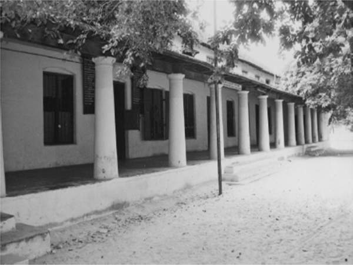
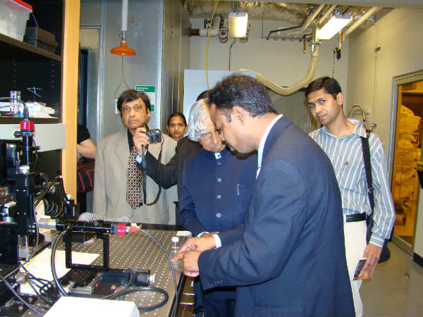
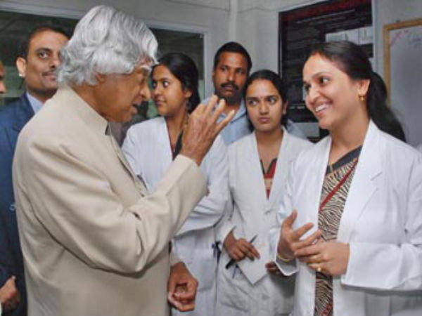

|  |
|
After completing his schooling at the Rameshwaram Elementary School, Kalam went on to attend Saint Joseph's College, Tiruchirappalli, then affiliated with the University of Madras, from where he graduated in physics in 1954. Towards the end of course, he was not enthusiastic about the subject and would later regret the four years he studied it. He then moved to Madras in 1955 to study aerospace engineering. Becoming a fighter pilot was a "dearest dream" but he failed to realise it as he bagged the ninth position when only eight slots were available in the IAF. |
|  |
|
After graduating from Madras Institute of Technology (MIT - Chennai) in 1960, Abdul Kalam joined Aeronautical Development Establishment of Defence Research and Development Organisation (DRDO) as a scientist. Kalam started his career by designing a small helicopter for the Indian Army, but remained unconvinced with the choice of his job at DRDO.Kalam was also part of the INCOSPAR committee working under Vikram Sarabhai, the renowned space scientist. In 1969, Kalam was transferred to the Indian Space Research Organisation (ISRO) where he was the project director of India's first indigenous Satellite Launch Vehicle (SLV-III) which successfully deployed the Rohini satellite in near earth orbit in July 1980.Joining ISRO was one of Kalam's biggest achievements in life and he is said to have found himself when he started to work on the SLV project.Kalam first started work on an expandable rocket project independently at DRDO in 1965. In 1969, Kalam received the government's approval and expanded the programme to include more engineers. |
|  |
|
Kalam's desire to meet spiritual leaders to help create a more prosperous, spiritual, and unified India was what initially led him to meet Pramukh Swami, the Hindu guru of the BAPS Swaminarayan Sampradaya, who Kalam would come to consider his ultimate spiritual teacher and guru. The first of eight meetings between Kalam and Pramukh Swami over a fourteen-year period took place on 30 June 2001 in New Delhi, during which Kalam described being immediately drawn to Pramukh Swami's simplicity and spiritual purity. Kalam stated that he was inspired by Pramukh Swami throughout their numerous interactions. One such incident occurred the day following the terrorist attack on BAPS' Akshardham, Gandhinagar complex in September 2002; Pramukh Swami prayed for, and sprinkled holy water upon, the sites of all of the deceased, including the terrorists, demonstrating the view that all human life is sacred. Kalam recalled being moved by Pramukh Swami's equanimity and compassion, citing this incident as one of his motivations for writing Transcendence: My Spiritual Experiences with Pramukh Swamiji. Summarising the effect that Pramukh Swami had on him, Kalam stated that "[Pramukh Swami] has indeed transformed me. He is the ultimate stage of the spiritual ascent in my life ... Pramukh Swamiji has put me in a God-synchronous orbit. No manoeuvres are required any more, as I am placed in my final position in eternity." Following Kalam's death a month after his final book was released, co-author Arun Tiwari pointed to this passage as potentially prophetic and premonitory of Kalam's death. |